Decreasing Universe Theory: A Relação de Tully-Fisher
Joao Carlos
Holland de Barcellos, São Paulo, Brasil
Abstract: A partir da teoria ‘Decreasing Universe’ (DUT), particularmente da fórmula que
explica a ilusão da matéria escura [04], iremos derivar a relação de Tully-Fisher
[01] para galáxias espirais.
Keywords: Tully-Fisher, Dark Matter,
Hubble’s Law, Dark Energy, Decreasing Universe, Universe Expansion, Dark Matter
1-Introdução
A “Decreasing Universe Theory” parte
da premissa de que o campo gravitacional faz encolher continuamente
o espaço e tudo que tiver contido nele.
Locais em que o campo gravitacional é nulo não há encolhimento.
A partir
desta premissa já chegamos aos seguintes resultados:
1-Derivamos
a Lei de Hubble [02] (Sem necessidade de energia escura)
2-Derivamos uma
fórmula simples da distância de uma galáxia em função do seu redshift [03]
3-Derivamos
a curva de rotação da galáxia Messier 33: Explicamos porque a matéria escura é
uma ilusão e como a curva de rotação das estrelas na galáxia pode ser obtida
sem invocar tal entidade [04]
4-Deduzimos,
sem postular, que a velocidade da luz é invariante para os referenciais que
estão se contraindo devido ao campo gravitacional e os referenciais que não
estão. [05]
5-Derivamos o
“Cosmological Time Dilatation”
e mostramos como isso pode ser aplicada ao tempo de explosão da Super Nova do
tipo SN1A, tempo este que cresce com o fator (Z+1) [05]
Neste artigo
derivaremos a relação de Tully-Fisher.
2-A
relação de Tully-Fisher
A relação
de Tully–Fisher [01] é uma lei empírica da astrofísica que conecta dois
observáveis em galáxias espirais:
-quão rápido elas giram
-quão brilhantes (ou massivas) elas são
[F00]
Relação de Tully Fisher
Onde:
 = Massa ou luminosidade (brilho da
galáxia)
= Massa ou luminosidade (brilho da
galáxia)
= velocidade de rotação
Tully-Fisher
estabelece que a massa de uma galáxia espiral é proporcional a quarta potência
da sua velocidade (a velocidade das estrelas mais distantes da sua órbita)
Agora, a
partir da DUT, iremos derivar a chamada “Relação de Tully-Fisher”
(TFR).
3-Algumas
fórmulas e Conceitos
Para
chegarmos à TFR iremos nos utilizar de algumas fórmulas e conceitos que
estabelecemos em artigos anteriores [06].
Primeiramente
então, recordaremos as principais fórmulas e resultados obtidos.
A fórmula
principal é a que relaciona a medida da contração do espaço (e tudo que estiver
contido nele) com a medida obtida por um referencial que não se contrai e
vice-versa.
Assim, a
medida de distância (L) do espaço sideral (que não se contrai), observado por
um referencial que está em contração, é dado por [02][04]:
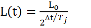
(Contraction
formula from the point of view of a
non-shrinking observer)
Onde:
L (t) = Measure of L0 (decreasing) by a
"Sidereal Observer".
t0 =Initial time (arbitrary)
L0 =Length measured in t=t0
Tj = Jocaxian
Time (Time to shrink to half)
∆t = t – t0
Reescrevendo e usando o Jocaxian Factor (Fj):

Jocaxian’s
Factor
Ou, de outra forma:

Assim (F1): 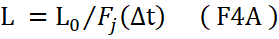
Se o objeto
ou distância, que está sendo medido, está no referencial que não se contrai
ocorre o oposto: Da terra (que está se contraindo) veremos o objeto (ou
distância) aumentar de tamanho, e não diminuir: 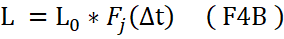
Do nosso
artigo original [02] associamos o ‘Jocaxian
Factor’ com a constante de Hubble:
D(∆t) = D0 * Fj(∆t) ( F5 )
(Distance Formula with the Jocaxian Factor).
Where:
“t0“is the time at which the photon was emitted by the galaxy.
"t" is the time at which Earth received this photon.
"D0" is the distance we would measure, from Earth to
galaxy at time "t0"
"D(∆t)"
is the distance we measured from Earth to a galaxy after “∆t”time.
"Δt" = t-t0 Time period
3.1-A Lei
de Hubble
Derivando em
relação a ‘T’ teremos :
V = d[ D(∆t) ] /dt ( F6A )
V = ( ln(2) / Tj )
* D(∆t) (
F6B )
(Distant galaxies’ apparent
distance speed formula.)
Mas
a Lei de Hubble :
V = H0 * D ( F7 )
(Hubble’s Law)
Where (H0 = Hubble’s Constant and D is the distance from the galaxy)
Portanto :
H0
= ( ln(2) / Tj ) ( F8 )
Constante de Hubble em termos do tempo Jocaxiano
3.2-Parâmetros e Constantes da DUT
Nós
definimos o fator Jocaxiano [04] como sendo :
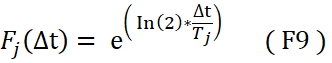
Ou em termos
da constante de Hubble:
Fj(∆t) = exp( H0*∆t) ( F10 )
(Jocaxian
Factor in terms of the Hubble constant)
3.3-Uma
nova Hipótese
Para adequarmos
a fórmula para usa-la em outra galáxia (ou em outro local), com campo
gravitacional diferente de onde estamos, isto é, para adequarmos a formula
[F10] em um referencial com campo gravitacional ‘g’ (diferente da posição que
nos encontramos na via lactea =‘gt’ ) , fizemos uma
hipótese extra:
“The contraction time is inversely proportional to the intensity of the
gravitational field.” [04]
Assim teremos (para o
tempo de contração cair à metade):
Tj(g) = Tj⋅ (F11)
Where
Tj=Jocaxian Time (Time
to Length contract to half)
gt=GMt/Rt2 (gravitational field at Earth (Milk Way) ).
g =GM/R2 (gravitational field at distance R from galactic
center).
O que nos
leva ao generalized Jocaxian
Factor:
Fj(Δt,M,R)
= 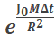
Onde
 =
=  (F13)
(F13)
(Jocax Constant ≈ 1,37E-18 m²·s⁻¹·kg⁻¹).
Where
H0=Hubble
Constant (≈2,2E-18 s-1)
Rt = Distance from Earth to center of Milk Way (≈2,5E20 m)
Mt= Mass of Milk Way (≈1E41 Kg)
Com esta
nova hipótese, pudemos escrever [F4A] genericamente:
Assim, a medida observada no referencial não contrainte
(comoving) de algo que se contrai em um campo ‘g’
qualquer:
L(t) = L0/Ft(M,R,T) [F14]
medida comoving em um campo ‘g’ diferente do terrestre (gt)
4-A Equação da Matéria escura
Vamos
colocar outra pequena recordação da derivação da equação da Matéria
Escura [04] para entendermos o processo:
Para compreender
o que acontece com o fóton até chegar à Terra, devemos considerar que:
a) Tanto
a galáxia de onde o fóton se originou quanto a Via Láctea estão em processo de
contração desde sua formação. Consideraremos que ambas iniciaram a contração
simultaneamente, no instante T0. (Consideraremos T0
como o tempo desde a formação da galáxia até os dias atuais: aproximadamente 13
bilhões de anos (=4E16 s).
b) A taxa
de contração, como vimos, depende da massa da galáxia e, portanto, pode
apresentar taxas diferentes. O Fator Jocaxiano generalizado
[F12] levará em conta essas diferenças.
c) É
importante notar, como vimos anteriormente, que a taxa de contração da estrela
que emite o fóton depende de sua distância (R) do centro da galáxia.
Assim, o desvio para o vermelho do fóton emitido (considerando apenas esse
fator) será maior quanto mais distante a estrela estiver do centro da galáxia.
d) Obviamente,
parte do desvio para o vermelho se deve à velocidade de rotação da estrela, que
é maior quanto mais próxima a estrela estiver do centro.
e) Essa
diferença no desvio para o vermelho de saída, em função da distância do centro
da galáxia, definirá o “efeito da matéria escura” e sua curva peculiar.
f) Consideremos
que T1 é o instante em que o fóton é emitido da galáxia de origem em
direção à Terra. Quando ele deixa a galáxia de origem, ele para de se contrair,
uma vez que o campo gravitacional da galáxia se torna desprezível.
g) Calcularemos
a velocidade aparente da estrela (em função de sua distância do
centro), considerando o desvio para o vermelho até o momento em que ela deixa a
galáxia. (Não consideraremos o efeito da “energia escura”, que é a contração da
nossa galáxia após o fóton deixar a galáxia emissora até chegar à Terra).
4.1-As
equações
Para simplificar,
vamos assumir que as galáxias se formaram ao mesmo tempo. Nesse caso, os fótons
começaram a se contrair de maneira diferente em cada galáxia com massas
diferentes.
O desvio
para o vermelho total é a variação no comprimento de onda em relação a um
padrão na Terra.
Inicialmente,
logo após sua formação, ambas as galáxias, a emissora e a receptora (a Via Láctea) emitiam
fótons no mesmo comprimento de onda λ0.
Após cerca
de 13 bilhões de anos (T0), as taxas de contração eram
diferentes e, portanto, o comprimento de onda diminuiu de forma diferente
para ambas as galáxias.
Na Via
Láctea, o fóton após T0 terá um comprimento de onda menor:
λT0 = λ0/FTJ(T0) = λ0/exp(H0T0)
[F15]
Onde:
λ0 = Wave length at beginning
λT0 = wave length of photon in Earth after T0
FTJ = Jocaxian Factor on Earth
T0 = Time from beginning of Galaxy until
Now (13G Years)
Na galáxia emissora a taxa de contração é diferente, por isso precisaremos
usar a formula geral [F14]:
λM0 = λ0/Fj(T0,M,R) [F16]
Where:
λM0 = wave length of photon in another
galaxy after T0
Fj(T0,M,R)= generalized Jocaxian Factor
M = Mass of the galaxy
R = Distance of star to center of galaxy
No entanto, a estrela, que
emite o fóton, apresentará um desvio para o vermelho que depende
de sua velocidade de rotação:
V
= SQRT(MG/R) [F17]
Lembrando que: V = cz [F18]
Onde c = Speed of light
z = redshift
z = V/c = (λM1 / λM0 - 1 ) [F19]
Onde
λM1 = wave length of photon in galaxy
rotation velocity
De [F17][F18][F19] derivamos
:
λM1 = λM0
( SQRT(MG/R)/c + 1 ) [F20]
O desvio para o vermelho final em relação à Via Láctea será de:
Zf = (λM1 - λT0 )/ λT0 [F21]
Assim,
Zf = (λM0 ( SQRT(MG/R)/c + 1 ) )/ λT0 -1 [F22]
Substituindo [F15] e [F16], teremos:
Zf = (exp(H0T0)/ Fj(T0,M,R) ) (SQRT(MG/R)/c + 1) -1 [F23]
But v = cz ,
then the speed measured on Earth (without considering the effect of “dark
energy” = Our contraction during the photon’s journey), will be:
V
= c { (exp(H0T0)/ Fj(T0,M,R) ) (SQRT(MG/R)/c + 1) -1 } [F24]
Substituindo Fj(T0,M,R) finalmente teremos a equação da matéria
escura ou a curva de rotação aparente da galáxia:
V=c ( 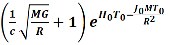
Galaxy Rotation Curve (‘Equação da Matéria Escura’)
Where:
C = Speed of Light ( 3E8 m/s )
M = Mass of the Emitting Galaxy
( 1,4E40 Kg )
G = Gravitational Constant ( 6.7E-11 )
R = Distance from the Star to
the center of the galaxy
H0 = Hubble Constant (2.2E-18)
T0 = Contraction Time (13
billion years = 4E16s)
J0 = Jocax
Constant ( 1,37E-18 )
Antes de continuarmos, devemos nos ater
a uma importante lei sobre a densidade de matéria das galáxias espirais:
5-O Brilho é proporcional a densidade
Para
galáxias espirais dominadas por discos bariônicos, a distribuição luminosa
observada é frequentemente utilizada como traçador direto da densidade
superficial estelar, especialmente quando se assume uma razão
massa/luminosidade ((M/L)) aproximadamente constante em bandas ópticas
vermelhas ou infravermelhas. Nesse contexto, a densidade superficial estelar
pode ser escrita como: Σ(R)=(M/L)I(R)
onde Σ(R)
representa a densidade superficial bariônica/estelar e ( I(R) ) o brilho superficial. Assim, maior luminosidade por
unidade de área implica maior concentração de massa bariônica visível. Essa
aproximação é amplamente empregada em estudos estruturais de discos espirais. (Aanda)
M/L ≈ Cte1 [F26]
A razão
Massa/Luminosidade é constante em galáxias espirais
Onde: M = Massa da galáxia
L =
Luminosidade da galáxia
Historicamente,
Freeman (1970) observou que muitas galáxias espirais de alto brilho superficial
apresentavam valores centrais de brilho relativamente semelhantes, fenômeno
conhecido como Lei de Freeman[07],
sugerindo que uma grande fração dessas galáxias compartilha uma faixa
relativamente estreita de brilho superficial central. Embora trabalhos
posteriores tenham mostrado dispersão maior devido à inclusão de galáxias de
baixo brilho superficial, a relação continua relevante para espirais clássicas
de alto brilho. (OUP Academic)
L/A ≈ Cte2 [F27]
Sob a
hipótese de que o brilho superficial rastreia aproximadamente a densidade
bariônica superficial, a similaridade observacional do brilho
superficial central implica que muitas galáxias espirais clássicas possuem
densidades médias de massa bariônica relativamente próximas entre si, ao menos
como aproximação de primeira ordem.
Em
outras palavras, se luminosidade superficial e densidade bariônica estão
correlacionadas, então discos espirais com brilho superficial semelhante
tenderão também a apresentar distribuições médias de massa superficial
comparáveis.
Essa
regularidade fornece uma base observacional para modelagens simplificadas em
que galáxias espirais compartilham propriedades estruturais baryônicas semelhantes. (Aanda)
Assim de [F26] e [F27] teremos
que (para uma subclasse significativa
de espirais de alto brilho superficial):
≡ M/A ≈ Cte [F28]
A Densidade de massa
superficial para galaxias espirais são muito próximas
Onde:
ρ = Densidade
de massa superficial
M = Massa da galáxia
A = Area da Galáxia
( π*R2max )
6-Derivando Tully Fisher
A partir da equação da Matéria escura [F25] e se supusermos algumas hipóteses simplificadoras [F26] e [F27] poderemos derivar
Tully-Fisher.
Sabemos que para uma galáxia espiral a massa esta inscrita aproximadamente
em uma circunferência
e, portanto, essa
massa deve ser proporcional à area desta circunferência:
M = ρ * π * R2 [F29]
A massa
de uma galáxia espiral é proporcional à area
Onde
M= Massa da galáxia
ρ = densidade
media de massa por unidade de àrea
R = Raio da galáxia
A via-Láctea é uma galáxia espiral,
então podemos escrever:
Mv
= ρv * π * Rv2 [ F30 ]
Massa em
função do raio para a Via-Láctea
Agora podemos re-escrever a constante Jocaxiana (Jt))
[F13] em função da densidade superficial [F30] :
= 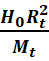 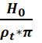
J0 em função da densidade de Massa para
galáxias planas
Onde:
J0 = Constante Jocaxiana
H0 = Constante de Hubble
ρt = Densidade de massa média da via láctea
Podemos reescrever a equação [F25] em função das densidades
de massa por àrea:
V=c ( 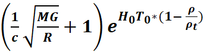
Curva de rotação em função
da densidade superficial de massa
Podemos usar [F28] e escrevermos :
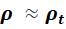
Usando [F33], a equação
[F32] ficará:
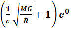
V=c (
Utilizando [F29], Teremos:
V= 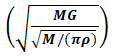 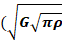
E, finalmente:
M ∝ V4 [F36]
relação de Tully-Fisher
7-Conclusão
Utilizamos
os princípios da DUT,
particularmente, a “equação da matéria escura” [F25], além de
duas hipóteses simplificadoras da astrofísica [F26] e [F27], para chegarmos a relação de Tully-Fisher.
Isso mostra
que a DUT pode reproduzir teoricamente relações de escala empíricas
importantes da astrofísica.
8-Referências
[01] Tully–Fisher relation
https://en.wikipedia.org/wiki/Tully%E2%80%93Fisher_relation
[02] Derivation of Hubble’s Law and its relation to dark
energy and dark matter
https://medcraveonline.com/OAJMTP/OAJMTP-02-00049.pdf
[03] Decreasing universe: the distance as a function of redshift
https://medcraveonline.com/AAOAJ/AAOAJ-09-00220.pdf
[04] Decreasing Universe: The 'Dark
Matter' Effect
https://www.wecmelive.com/open-access/decreasing-universe-the-dark-matter-effect.pdf
[05] Decreasing Universe Theory:
Cosmological Time Dilation and the SN1A Explosion
https://vixra.org/abs/2604.0064
[06]
Main DUT articles
https://jocaxx.github.io/DUniverse/Articles.pdf
[07] Freeman law
https://en.wikipedia.org/wiki/Freeman_law